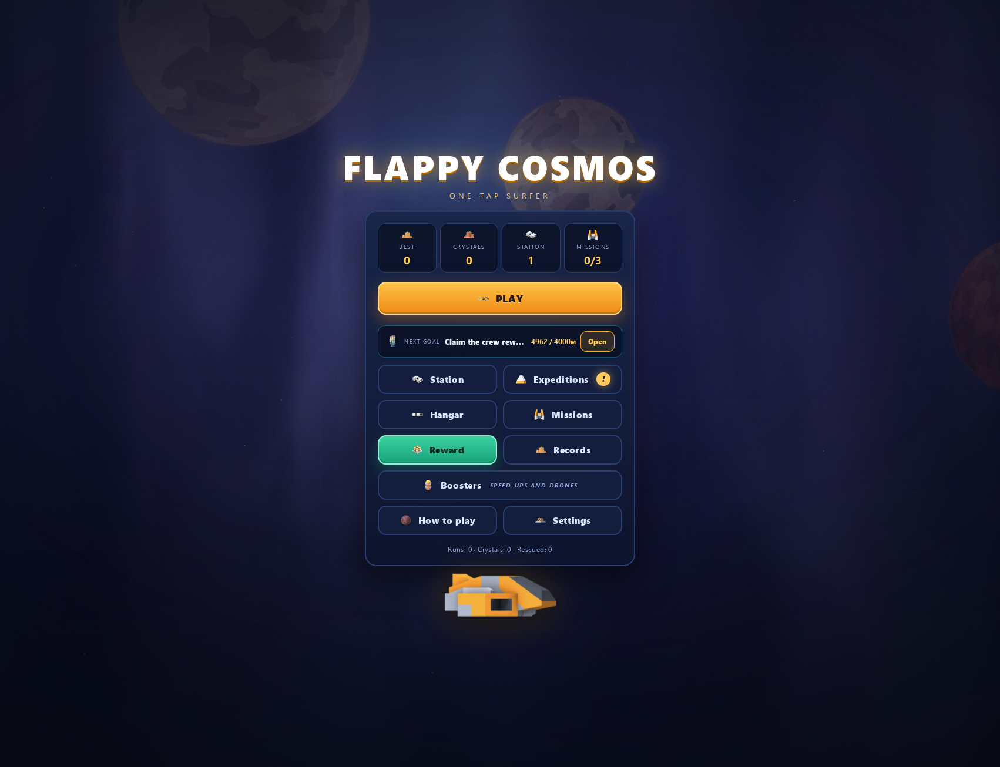

Флаппи Космос
Космическая тапалка в одну кнопку: лети сквозь препятствия, выполняй миссии, открывай экипаж и рекорды. Играть бесплатно без установки.
Играть прямо сейчас

Об игре
Одна кнопка — и ты в полёте: тап поднимает корабль, гравитация тянет вниз. Между этим — препятствия, бонусы и ускорители. Дистанция копится в «Станции»: чем дальше, тем больше наград, миссий и новых членов экипажа. Есть экспедиции, ангар с персонажами и миссии на каждый день.
Что внутри
- Одно управление: один тап
- Дистанция, кристаллы и награды за станции
- Миссии, экспедиции и экипаж
- Быстрые заходы: сессия 30–90 секунд
Где играть
- На этом сайте: Флаппи Космос в браузере
- ВКонтакте / VK Игры — запуск из интерфейса VK
- Яндекс Игры — без установки, с прогрессом аккаунта
- RuStore и Google Play — мобильные версии (Android)
Частые вопросы
Нужно ли скачивать? Нет: игра открывается в браузере на телефоне и компьютере.
Нужен ли аккаунт? Нет. Прогресс сохраняется на устройстве, а на площадках (VK, Яндекс) — в аккаунте.
Игра платная? Бесплатная. Внутри есть реклама и покупки — они ускоряют прогресс, но не обязательны.